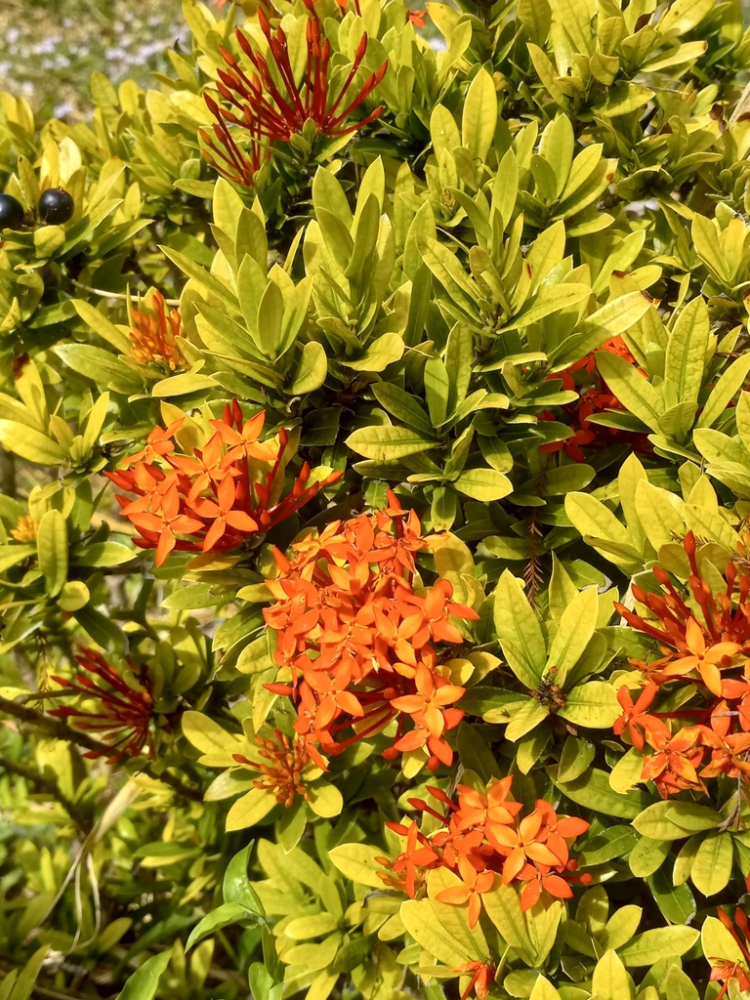

- The standard ixora is red — Jungle Flame is a common nickname. The Maui Yellow cultivar trades that for a soft golden-yellow that reads differently in the landscape: warmer, less assertive, more quietly tropical.
- Ixora is one of the more reliable butterfly nectar plants for Florida gardens. The tubular flower clusters are accessible to butterflies and hummingbirds but not to most insects with shorter mouthparts.
- Sensitive to cold and to high-pH soil — alkaline conditions cause chlorosis, a yellowing of the leaves that is a common problem in Florida where soils tend toward alkaline. Acid fertilizer or soil amendment fixes it.
- Native to India and Sri Lanka. In its home range a significant plant in Buddhist and Hindu temple culture.
Non-native. Native to southern India and Sri Lanka. Member of Rubiaceae — the coffee family — making it a relative of coffee, Wild Coffee, Pentas, and Firebush elsewhere in the park.
- The standard-issue ixora in Florida landscapes is the red-flowered Jungle Flame — a reliable and widely used flowering shrub that can blur into the background through familiarity. The Maui Yellow cultivar steps back from that intensity with soft golden-yellow flower clusters that hold their color over a long bloom season.
- Ixora is sensitive to soil pH in a way that shows quickly. Alkaline soils cause interveinal chlorosis — the leaves yellow while the veins stay green, giving the plant a faded, stressed appearance. In Florida where soils often trend alkaline, this is a common issue with ixora. Acid fertilizer or soil acidification corrects it promptly.
- A plant that looks unhealthy here is often just in the wrong soil chemistry, not actually ill.
- In its native India and Sri Lanka, ixora has deep roots in temple culture — the flowers are used in Hindu and Buddhist religious offerings, garlands, and ceremonies. The genus name Ixora derives from a Portuguese rendering of Isvara, a Sanskrit name for the Hindu deity Shiva.
A reliable butterfly and hummingbird nectar plant. The dense tubular flower clusters are well-suited to butterflies and hummingbirds; the tube length limits access for shorter-tongued insects.
Blooms over a long season, providing an extended nectar window. The dense evergreen foliage offers cover and nesting structure for small birds.
Dense, rounded clusters (cymes) of tubular four-petaled flowers in golden yellow (this cultivar). Blooms throughout warm months with peak flowering spring through fall.
Small, dark, berry-like drupes. Rarely significant ornamentally.
Opposite, glossy, dark green, oval to oblong. New growth often has a reddish-bronze tint. Yellowing with green veins (interveinal chlorosis) indicates alkaline soil conditions — respond with acid fertilizer or soil amendment.
Evergreen shrub, typically 4 to 6 feet tall and wide; can reach 8 to 10 feet unpruned. Dense branching.
The golden-yellow flower clusters against dark glossy leaves. Distinguish from standard red ixora by flower color. Yellowing leaves with green veins are a soil chemistry signal, not disease.
This isn't a food plant, but it's harmless — not listed as toxic to people, and ASPCA-listed as non-toxic to dogs and cats.


- © teschaim (CC-BY-NC), via iNaturalist
- © Ruby Meador (CC-BY-NC), via iNaturalist